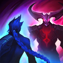
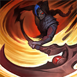
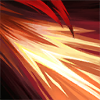
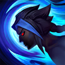
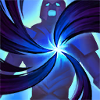
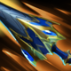

起手裝備
 長劍
長劍

調整為魔劍正宗 → 妖夢鬼刀 → 巨蛇鋒牙 → 席利妲咒怨 → 守護天使；本頁預設闇影刺客；魔劍、物穿與穿牆側翼服務短爆發，冥血形態另用鬥士方案。起手長劍，鞋線爆發之靴→碎甲者之靴；核對五成裝、前三核心及情境替換來源。 頁面區分闇影刺客及冥血形態；本次讀取闇影刺客配置，未取得明確形態Tier，維持S（證據有限）。魔劍進化為魔劍正宗，不重複占格。


五件成裝與鞋子分開列示；起手與核心是購買路線，不是額外佔用的成裝欄位。鞋子完成時機仍依對線壓力與回城金錢調整。


先發制人／即刻衝擊／傲慢／眼球收集器／迅捷。依本頁預設闇影刺客；魔劍、物穿與穿牆側翼服務短爆發，冥血形態另用鬥士方案核對觸發條件；確認主系各列一枚與一枚副系，First Strike映射先發制人、Empowerment映射遇強則強。


閃現保留進場角度與撤退彈性，重擊維持打野必備。 本英雄以變身鬥士／穿牆遊走／形態選擇定位使用；7.3b不改重擊主動斬殺值，需看進化與充能。
加點優先：Q > W > E
優先級Q > W > E；保留適合本頁清營的前三級，之後依優先級逐級檢查，R在5／9／13級。此為15級編輯順序，不宣稱逐場固定最優。

對英雄造成傷害累積兩種形態能量，最終可選擇冥血族裔或詭影刺客；紅形態獲得技能吸血，藍形態在接戰初期造成額外傷害。

向前衝刺後旋轉鐮刀，兩段都造成物理傷害，對野怪有額外傷害並可穿越薄牆。

向前揮出鐮刀造成物理傷害與緩速；紅形態改為擊飛，藍形態可在移動中由影分身施放並增加距離。

提高跑速並穿越地形，進入牆體時回復生命；藍形態冷卻更短並獲得更高跑速與緩速免疫。

進入近期被自己傷害的敵方英雄體內，短暫無法被指定後從指定方向衝出造成傷害；紅形態依最大生命造成傷害並回復。
本頁預設闇影刺客；魔劍、物穿與穿牆側翼服務短爆發，冥血形態另用鬥士方案。已核對既有技能摘要、連招操作條件及前中後期說明；沒有足夠證據改寫其餘完整技能成長數值。
3技穿牆 → 2技緩速 → 1技雙段 → 普攻 → 4技躲招
三技從敵方視野外接近，二技命中後一技貼身，遭到反擊時用大絕躲技能。
3技加速 → 藍形態2技 → 1技 → 普攻 → 4技收尾
藍形態二技能邊走邊施放，配合一技快速打完接戰初期額外傷害。
紅形態2技擊飛 → 1技百分比傷害 → 普攻 → 4技回血 → 1技再進場
紅形態利用二技擊飛與一技持續吸血，大絕進入高生命目標可獲得更多回復。
利用一技穿過薄牆快速清野，三技夜叉行可穿越地形繞開視野。攻擊近戰英雄較容易累積冥血族裔能量，攻擊遠程英雄則偏向詭影刺客，選擇形態前就要規劃抓哪一路。
魔劍正宗 → 妖夢鬼刀 → 巨蛇鋒牙為預設前段順序。本頁預設闇影刺客；魔劍、物穿與穿牆側翼服務短爆發，冥血形態另用鬥士方案。後兩格依敵方實際威脅替換；先完成關鍵核心，再決定防裝與穿透，支援物件前確認重擊充能及隊友線權。
依形態決定角色，不要混用打法。藍慨影等待側翼秒殺後排；紅慨影站在前排邊緣反覆擊飛與吸血，利用大絕依目標最大生命回復。
以同頁打野威脅名單艾克、阿姆姆、拉姆斯更新，有利名單僅是既有機制判斷，排除與威脅重複者；慨影入侵仍看兩側線權、血量及關鍵技能，不當作固定單挑勝率。
對局名單是機制與分路判斷，不代表固定勝率；需同時看雙方熟練度、兵線與陣容。
替換以本頁五件成裝為基準；同一格建議擇一。二、三級鞋是一條升級線，換鞋時整條同步；魔劍進化不占新欄位。
高
觸發：敵方前排物防／魔防成形，或近身普攻威脅明顯。
已帶對應穿透或冰霜之心時保留，不重複購買；依實際傷害類型決定。
高
觸發：主要死亡原因是一輪集火，無法完成輸出或控制。
同一格有多個建議時擇一；核心成形後依實際威脅調整。
高
觸發：敵方法術先手或持續魔法傷害成為主要威脅。
守護天使 → 魔提斯深淵
依魔法傷害壓力補魔防；已有命脈裝時改用自然之力，避免重複命脈。
依魔法傷害壓力補魔防；已有命脈裝時改用自然之力，避免重複命脈。
高
觸發：魔法傷害與控制鏈影響生存或輸出。
爆發之靴 → 水星之靴
魔法傷害及可被韌性縮短的控制占主導時，鞋線整條改水星之靴→鎖鏈軍靴。
魔法傷害及可被韌性縮短的控制占主導時，鞋線整條改水星之靴→鎖鏈軍靴。
韌性不能縮短所有控制，例如擊飛；護盾與解控各有適用條件。
高
觸發：敵人持續回復令集火失敗。
席利妲咒怨 → 致死宣告
回復威脅比原穿透裝的特殊效果更重要時，替換而非再疊一件。
回復威脅比原穿透裝的特殊效果更重要時，替換而非再疊一件。
中
觸發：對手護盾多時保留巨蛇；沒有穩定護盾目標時考慮其他功能。
巨蛇鋒牙 → 夜色緣界
對手沒有反覆出現的高額護盾，且其他隊友已能處理護盾時。
巨蛇削盾需要對應目標；改用此裝提供其他輸出或防護功能。
仍維持五件成裝。
敵方多近戰或高生命前排，需要長時間承傷與回復；這套是本站機制建議。




整套擇一使用；不要把闇影刺客物穿配置和冥血形態坦裝混成一套。依敵方魔法或物理威脅更換最後防裝。
本頁校正版本：7.3b；校正日期：2026-10-15。
參考來源標示版本：7.3b
Tier、出裝、符文與對局是本站編輯建議，不是官方推薦或已驗證台服勝率。v118延續同日v117的逐路複核，針對來源缺口及數值衝突再核對；未宣稱所有技能已在手機內逐級實測。
評級理由：維持S（證據有限）；未取得可直接套用的打野／形態評級。 本頁預設闇影刺客；魔劍、物穿與穿牆側翼服務短爆發，冥血形態另用鬥士方案；沒有台服同分路勝率樣本。
Riot 官方資料 ↗ · WildRiftFire 參考攻略 ↗
本頁延續2026/10/15 v117的打野逐項複核，當前採用7.3b來源；來源只用作配置與機制參考，不等同官方推薦或台服即時勝率。
維持S（證據有限）；未取得可直接套用的打野／形態評級。 本頁預設闇影刺客；魔劍、物穿與穿牆側翼服務短爆發，冥血形態另用鬥士方案；沒有台服同分路勝率樣本。